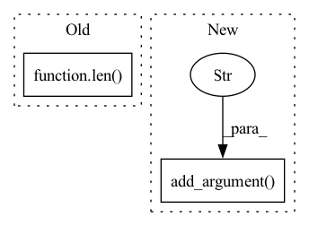

Pattern ID :9369
Before Change
for fold in test_list:
pos_c = pos_c + fold[0]
print(pos_c)
if pos_c >= 0 and pos_c!= len( test_list) :
test_pos = 1
acs = []After Change
parser.add_argument("--datasets", default="musk1", type=str, help="Choose MIL datasets from: musk1, musk2, elephant, fox, tiger")
parser.add_argument("--lr", default=0.0002, type=float, help="Initial learning rate")
parser.add_argument("--num_epoch", default=40, type=int, help="Number of total training epochs")
parser.add_argument("--cv_fold" , default=5, type=int, help="Number of cross validation fold")
parser.add_argument("--weight_decay", default=5e-3, type=float, help="Weight decay")
args = parser.parse_args()
if args.datasets == "musk1":In pattern: SUPERPATTERN
Frequency: 3
Non-data size: 2
Instances Fragment ID: 33587744
Project Name: binli123/dsmil-wsi
Commit Name: 9904a494d25725384a486cb0c262c73de91b327a
Time: 2020-11-19
Author: bli346@wisc.edu
File Name: train_mil.py
M Class Name: AnonimousClass
N Class Name: AnonimousClass
M Method Name: main(0)
N Method Name: main(0)
M Parent Class:
N Parent Class:
M File Name: train_mil.py
N File Name: train_mil.py
M Start Line: 144
M End Line: 177
N Start Line: 114
N End Line: 168
Before Change
for fold in test_list:
pos_c = pos_c + fold[0]
print(pos_c)
if pos_c >= 0 and pos_c!= len( test_list) :
test_pos = 1
acs = []After Change
parser.add_argument("--datasets", default="musk1", type=str, help="Choose MIL datasets from: musk1, musk2, elephant, fox, tiger")
parser.add_argument("--lr", default=0.0002, type=float, help="Initial learning rate")
parser.add_argument("--num_epoch", default=40, type=int, help="Number of total training epochs")
parser.add_argument("--cv_fold" , default=5, type=int, help="Number of cross validation fold")
parser.add_argument("--weight_decay", default=5e-3, type=float, help="Weight decay")
args = parser.parse_args()
if args.datasets == "musk1": Fragment ID: 33587741
Project Name: binli123/dsmil-wsi
Commit Name: 9904a494d25725384a486cb0c262c73de91b327a
Time: 2020-11-19
Author: bli346@wisc.edu
File Name: .ipynb_checkpoints/train_mil-checkpoint.py
M Class Name: AnonimousClass
N Class Name: AnonimousClass
M Method Name: main(0)
N Method Name: main(0)
M Parent Class:
N Parent Class:
M File Name: .ipynb_checkpoints/train_mil-checkpoint.py
N File Name: .ipynb_checkpoints/train_mil-checkpoint.py
M Start Line: 144
M End Line: 177
N Start Line: 114
N End Line: 168
Before Change
gen_imgs=paddle.clip(paddle.add(gen_imgs,paddle.to_tensor(127.5)).transpose((0,2,3,1)),
min=0.0,max=255.0).astype("uint8").cpu().numpy()
for i in range(len( gen_imgs) ):
im = Image.fromarray(gen_imgs[i], "RGB")
im.save("./image/"+str(i)+".png")
After Change
parser.add_argument("-cfg", type=str, default="./configs/styleformer_cifar10.yaml")
parser.add_argument("-pretrained", type=str, default="./lsun.pdparams")
parser.add_argument("-num_out_images", type=int, default=16)
parser.add_argument("-out_folder" , type=str, default="./out_images_lsun")
parser.add_argument("-dataset", type=str, default=None)
parser.add_argument("-batch_size", type=int, default=None)
parser.add_argument("-image_size", type=int, default=None) Fragment ID: 33587742
Project Name: br-idl/paddlevit
Commit Name: d078be9519159835796c1ad2e475a4a3e2e5d558
Time: 2021-08-18
Author: xperzy@gmail.com
File Name: gan/Styleformer/generate.py
M Class Name: AnonimousClass
N Class Name: AnonimousClass
M Method Name: main(0)
N Method Name: main(0)
M Parent Class:
N Parent Class:
M File Name: gan/Styleformer/generate.py
N File Name: gan/Styleformer/generate.py
M Start Line: 31
M End Line: 55
N Start Line: 33
N End Line: 76